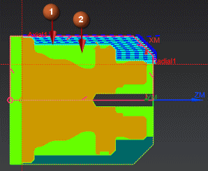

显示处理中的工件
在创建工序之前，您将显示处理中的工件(IPW)，处理中的工件将可视化表示由前一个工序移除的材料以及剩余材料。
-
在工序导航器的程序顺序视图中，右击背景并选择全部展开。
-
右击 ROUGH_TURN_OD 并选择工件→显示2D。
NC_PROGRAM
 未用项
未用项 PROGRAM
PROGRAM CENTERLINE
CENTERLINE CENTERLINE_SPOTDRILL
CENTERLINE_SPOTDRILL CENTERLINE_DRILLING
CENTERLINE_DRILLING ROUGHING
ROUGHING ROUGH_TURN_OD
ROUGH_TURN_OD

已粗加工部件外圆(1)，您将插铣槽的剩余部分(2)。